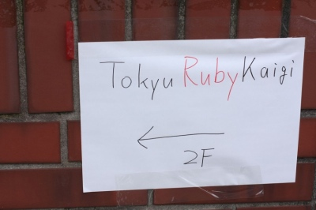
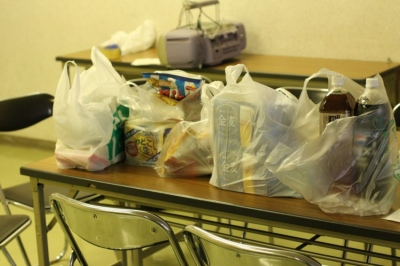
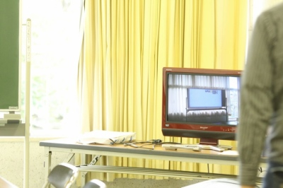
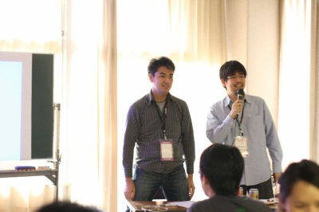
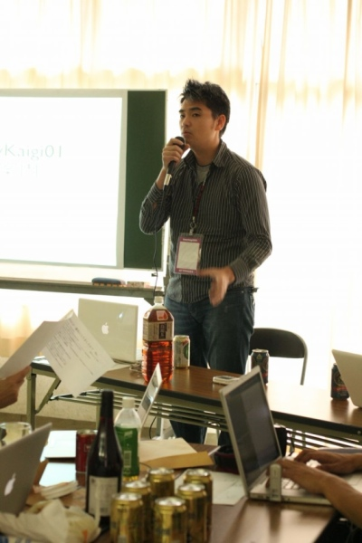
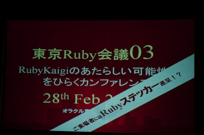
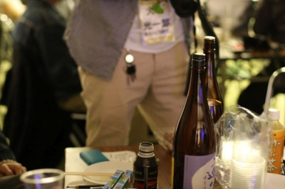

RegionalRubyKaigi レポート (12) Tokyu Ruby 会議 01
はじめに
: 
2009 年 11 月 29 日 (日)、「良い肉の日」に、Tokyu Ruby 会議 01 が開催されました。予想より多くの方に来ていただき、また多くの方に喋っていただけた、楽しい RegionalRubyKaigi となりました。
小雨が降る中お集まりいただきありがとうございました。
TokyuRuby会議 01 について
- 開催日
- 2009/11/29 (土) 14:00 〜 19:00
- 開催場所
- 大田区大森東地域センター
- 開催母体
- Tokyu.rb
- 参加者
- 35 人
開催の経緯と趣旨
: 
Tokyu Ruby 会議 01 は Tokyu.rb のスタッフによって企画立案され、RegionalRubyKaigi として開催されました。
もともとは Tokyu.rb のコアスタッフの中に「LT 大会をやりたい！」と言う思いがあり、それをいつか実現しようと考えていました。
Tokyu.rb を何度か開催していくうちにその思いは大きくなり、ちょうど 11/29 が「良い肉の日」で日曜日と言うのも重なり、いよいよ開催する運びとなりました。 Tokyu.rb と肉は切っても切り離せない関係だったので、この日取りは一部のスタッフのモチベーションを非常に向上させました。
ただこれを RegionalRubyKaigi にするかどうかにはいろいろと紆余曲折があったのですが、その話は Tokyu.rb へ参加して直接スタッフからお聞きください :)
さて Tokyu Ruby 会議 01 は他の RegionalRubyKaigi とか少し毛色が異なります。
- いわゆる講演やセミナーは行わずに LT 大会とする。
- みなさんの持ち込みでお酒やおつまみを用意してもらう、町の花見大会スタイルとする。
- 酒の勢いでなるべく多くの方に発表していただくために、抽選 LT をおこなう。
- サブ会場を用意して、LT らしく現地で資料作成やメイン会場の様子をまったりと楽しむことが出来るようにする。
: 
LT 大会はともかく、花見大会の様相を呈するなど、RegionalRubyKaigi に新たな風を巻き起こしたのではないかと少し思っています。 またずっとサブ会場にいらした方もいて、それはそれで別の楽しみ方だったのではと思っています。
開催概要
Tokyu Ruby 会議 01 は LT 大会ですが、普通に LT 大会を開催したのではあまり面白くないというスタッフの意見を取り入れて、「抽選 LT」と「投票による基調講演」という 2 つの特徴があります。当初はこれを含めて 4 部構成となっていました。
- 前半セッション
- 募集により集まった LT の前半戦です。
- 抽選 LT
- 当日参加者の中から抽選で数名の方に LT をしていただこうと言う企画です。酔いも程よく回った頃に、その勢いでなんでもいいので話してもらう感じです。
- 後半セッション
- 後半戦です。そろそろ酔いも回ってきたかなと言う頃合ですね。
- 投票による基調講演
- LT の中で一番良かったと思えるものに投票していただいて、その 1 位に選ばれた方に残り時間をすべて差し上げるので、喋りたいことを喋れと言う企画です。
Accept LT の追加
: 
ところが Rubyist にあるまじき進行の良さにより、かなり時間に余裕ができてしまいました。 そこでと言うわけではありませんが、抽選 LT のために準備してきた方がいらっしゃったようなので、Reject LT ならぬ Accept LT として、「喋りたいやつは紙に書いとけ！」というノリで当日募集を開始しました。すると総勢 12 名の方が応募すると言う事態に。
とまあそんな感じで開催したのですが、大枠の進行表は決まっていたのですが、ほとんどが当日アドリブで展開されていたと言う、本当に Tokyu.rb らしい RegionalRubyKaigi になりました。
以下ではその概要をお届けします。
開会の挨拶
軽い挨拶のあと、乾杯から Tokyu Ruby 会議 01 はスタートしました。 
前半セッション
酔いも回らない中、7 名の方が発表しました。
Ruby についてや、Ruby から飛び抜けた内容、また Rubyist に向けた提案まで幅広い内容となりました。
なぜかドラを鳴らす機会が少なく、LT にあるまじき進行の速さを見せていました。酒が入るとみんな早口になるのでしょうか。

抽選 LT
抽選 LT にもかかわらず、カリスマが登壇するという、
「ネタで K 谷さん当てましょうか？」
「いや、さすがにそこまでしなくてもいいんじゃないですかね」
「じゃあ普通にアミダくじで」
(アミダくじ)
「あれ、なんで K 谷さん当たるのｗｗｗ」
「さすがカリスマｗｗｗ」という展開でした。
抽選にも関わらず、ちゃんと資料を準備してきた方がいたりして、みなさんの気合の入り方を感じました。
もちろん資料がなくて突然前で話した感じの方もいらしたのですが、それはそれで印象に残る LT になっていました。

後半セッション
いよいよ酔いも回ってきて、会場がかなり酒臭くなる中、新たなカリスマが誕生する運びとなりました。
後半も Ruby を中心とした世界についての話で盛り上がりをみせました。 後半は 6 名の方が発表しました。
最後は東京 Ruby 会議 03 の告知が行われました。 
基調講演
みなさんからの投票による基調講演は、圧倒的得票数で新カリスマに決定しました。LT の時には紹介しきれなかったテクニックの披露に、会場は大いに盛り上がりました。

Accept LT
総勢 12 名の方が発表しました。なぜか資料が作りこまれている方や、LT の時に時間切れで喋りきれなかった内容を話す方、新プレゼン手法を披露する方までいらっしゃいました。
まとめ
: 
どちらかと言えば思いつきで始まった Tokyu.rb と Tokyu Ruby 会議 01 ですが、終わってみれば会場に来ていた方のほとんどが前で話すかスタッフだったと言う、非常に珍しい RegionalRubyKaigi となりました。やはり酒と肉の力は偉大だと、スタッフ一同、思いを強くした次第です。
さて次回は 5 月下旬頃に開催を予定しています。まだ会場や内容は決まっていませんが、同じく LT 大会を行う予定ですので、みなさんからの応募と参加を期待しております。
Tokyu.rb のご紹介
Tokyu.rb は東急沿線に住まう Rubyist の憩いの場として 1.5 ヶ月に 1 回程度集まって肉を食っています。
東急沿線でなくとも乗り入れ線沿線や、職場が沿線だったりする方も、もっと言えば誰でも参加可能です。お気軽にお越しください。
著者について
Rust/OGAWA (@conceal_rs)
300 万人規模の携帯向けメーリングリストサービスを Ruby on Rails で構築・運用している人。
Tokyu.rb 所属と言うか主催
jpmobile / termtter のコミッターでもある。